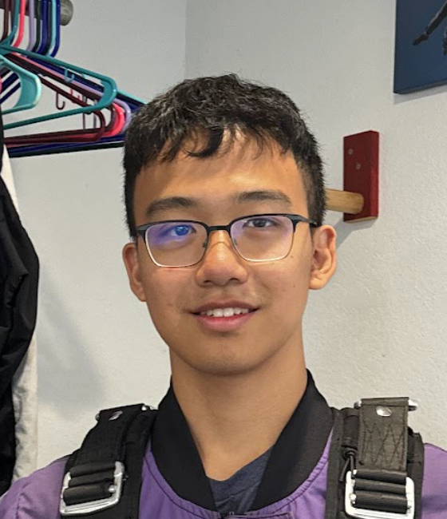

OpenGym Copilot
A reward-tuning copilot for MuJoCo and OpenAI Gym environments. Plug in your own backend APIs and have fun tuning! Currently a prototype.
Hey, I'm Aaron 👋
I'm an EECS student at UC Berkeley working at the intersection of robotics AI & LLMs and computer graphics. Currently a software engineer on autonomy behavior evaluation at Nuro.
Off the keyboard, you'll find me at the gym, playing video games, or out on a hike.

Things I've built, broken, and rebuilt.
A reward-tuning copilot for MuJoCo and OpenAI Gym environments. Plug in your own backend APIs and have fun tuning! Currently a prototype.
Led the creation of a real-time teleoperation and replay system for the UR7e robot arm, driven by a Quest 3 VR headset.
Simulations in Isaac Sim teaching a Unitree humanoid robot to do somersaults.
A method for building AI safety guardrails that cut latency by 99% without sacrificing performance, tested on an open-source safety dataset.
A cellular-automata-based voxel game system (think Minecraft) built for Berkeley's computer graphics course.
Built a VSCode extension for the NOME language, designed knot structures, and implemented shelling, merging, offsetting, and color-changing in this open-source 3D CAD tool.
Where I've been spending my days.
Nuro
Berkeley Sky Computing Lab · SkyRL
.safetensors file.Uniphore
UC Berkeley · Organizational Advising & Student Involvement Services
Ivoyant
Papers and course projects I'm proud of.
What I'm into these days. TODO: fill me in
Papers or books on your nightstand — e.g. something on robot learning, RL for LLMs, or a good sci-fi novel.
Research directions you're curious about — e.g. VLA models, sim-to-real, world models, evals for AV behavior.
Current lifting split, a PR you're chasing, or a goal for this year.
Bay Area hikes you'd recommend — Mission Peak? Mt. Tam? Your call.
Games in your rotation right now.
Your go-to drink for those tea chats.
Robotics, LLMs, graphics, or a good hiking trail — I'm always happy to talk.